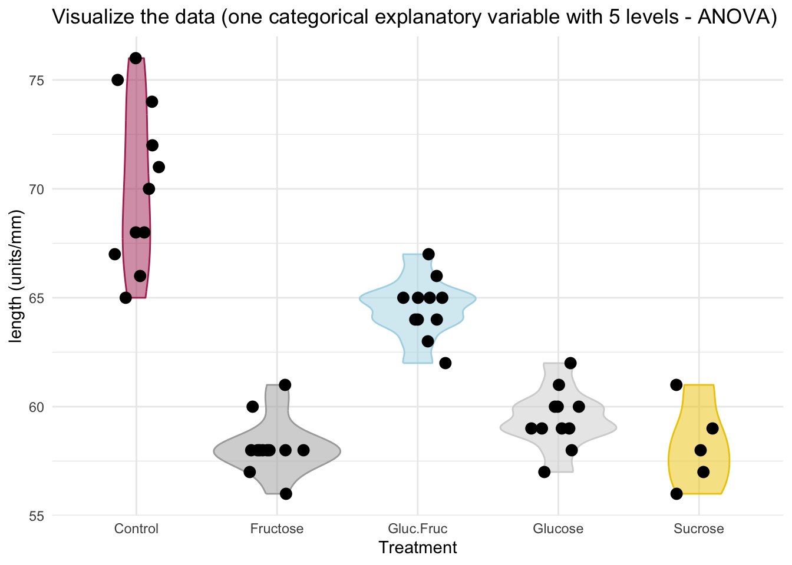
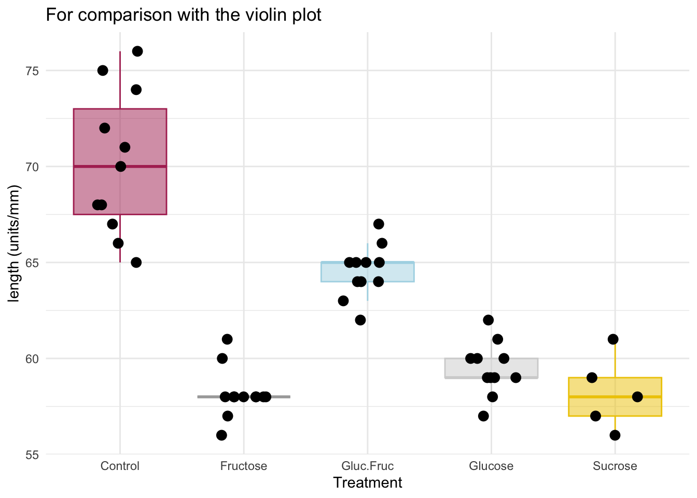
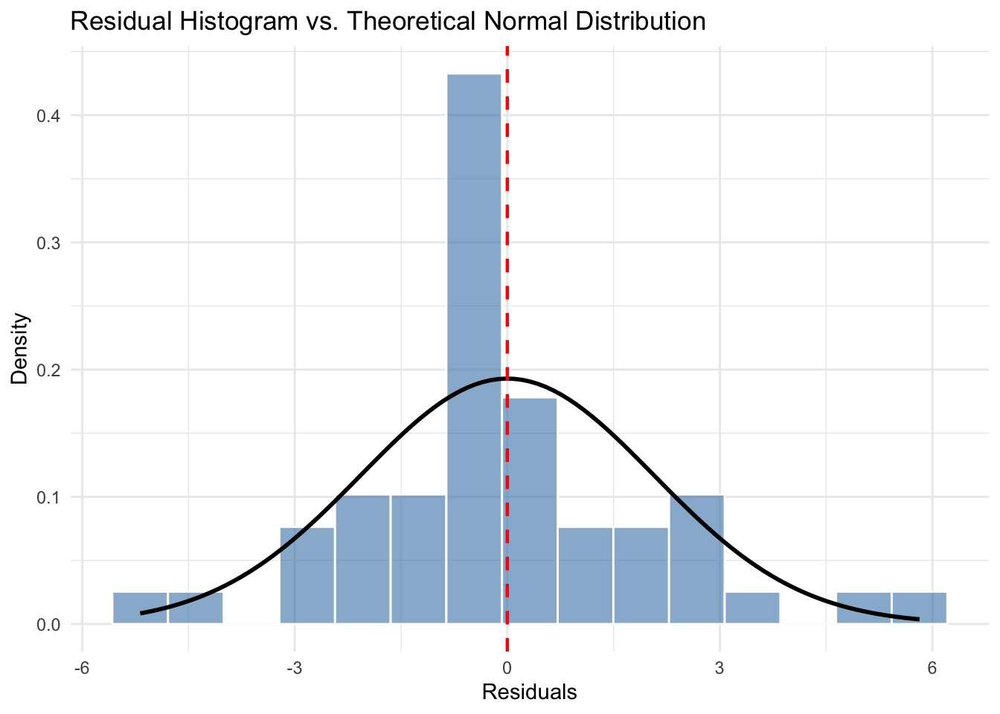

18 Wed Oct 21 - One way ANOVA (fixed effects)
This lecture is based on Chapter 10.3 of Dr. Schneider’s notes.
Sokal and Rohlf (1995, Box 9.4) present pea section lengths in ocular units (0.114 units/mm). The purpose of the experiment was to test the effects of four sugars and one control on growth as measured by pea section length. Instead of asking “What is the best test?” or What test do I use?” we ask: “What model do I use to analyze the effects?”
18.1 Construct the model
Verbal model: pea section lengths in treated groups differ from the control (untreated) group and among themselves.
From the verbal model we see that we have one response variable (pea section length) and an explanatory variable (four sugars and one control; 5 levels/groups). The explanatory variable consists of groups—it is a categorical variable
Let’s write the code to load and plot the data:
pea.data = read.csv("https://raw.githubusercontent.com/ahurford/biol-4605-data/refs/heads/main/data/pea-length.csv")
pea.data## treatment length
## 1 Control 65
## 2 Control 67
## 3 Control 68
## 4 Control 70
## 5 Control 71
## 6 Control 75
## 7 Control 76
## 8 Control 74
## 9 Control 72
## 10 Control 68
## 11 Control 66
## 12 Glucose 57
## 13 Glucose 58
## 14 Glucose 59
## 15 Glucose 60
## 16 Glucose 61
## 17 Glucose 62
## 18 Glucose 60
## 19 Glucose 60
## 20 Glucose 59
## 21 Glucose 59
## 22 Glucose 59
## 23 Fructose 56
## 24 Fructose 57
## 25 Fructose 58
## 26 Fructose 60
## 27 Fructose 61
## 28 Fructose 58
## 29 Fructose 58
## 30 Fructose 58
## 31 Fructose 58
## 32 Fructose 58
## 33 Fructose 58
## 34 Fructose 58
## 35 Sucrose 56
## 36 Sucrose 57
## 37 Sucrose 58
## 38 Sucrose 59
## 39 Sucrose 61
## 40 Gluc.Fruc 62
## 41 Gluc.Fruc 63
## 42 Gluc.Fruc 64
## 43 Gluc.Fruc 65
## 44 Gluc.Fruc 66
## 45 Gluc.Fruc 67
## 46 Gluc.Fruc 64
## 47 Gluc.Fruc 65
## 48 Gluc.Fruc 64
## 49 Gluc.Fruc 65
## 50 Gluc.Fruc 65require(ggplot2)
ggplot(pea.data, aes(x = factor(treatment), y = length, fill = factor(treatment), color = factor(treatment))) +
# 1. Add the violin plot layer
geom_violin(
alpha = 0.5 # Makes the violin fill transparent
) +
# 2. Add the strip plot (jittered points) layer
geom_jitter(
position = position_jitter(width = 0.2, height = 0), # Controls data spreading
color = "black",
size = 3 # Modify point size
) +
# 3. Specify the custom colors for each of the 5 treatments
scale_fill_manual(values = c("maroon", "darkgray", "lightblue", "lightgray", "gold2")) +
scale_color_manual(values = c("maroon", "darkgray", "lightblue", "lightgray", "gold2")) +
labs(
x = "Treatment",
y = "length (units/mm)",
title = "Visualize the data (one categorical explanatory variable with 5 levels - ANOVA)"
) +
theme_minimal() +
theme(legend.position = "none") # Hides the redundant legend since treatments are already on the x-axis
This is a figure that could support our results in a published paper. Alongside it we could report the results of our statistical analysis. We have switched from a boxplot to a violin plot. For comparison here is the box plot:
library(ggplot2)
ggplot(pea.data, aes(x = factor(treatment), y = length)) +
# 1. Add the box plot layer
geom_boxplot(
outlier.shape = NA, # CRITICAL: Prevents duplicate plotting of outliers
fill = c("maroon", "darkgray", "lightblue", "lightgray", "gold2"),
color = c("maroon", "darkgray", "lightblue", "lightgray", "gold2"), # Memorial colours
alpha = 0.5 # some transparency so we can still read the plot
) +
# 2. Add the strip plot (jittered points) layer
geom_jitter(
position = position_jitter(width = 0.2, height = 0), # Controls data spreading
color = "black", # Pick a distinct color for raw data points
size = 3, # Modify point size
) +
labs(
x = "Treatment",
y = "length (units/mm)",
title = "For comparison with the violin plot"
)+theme_minimal()
For both plots the assumption of equal variance for each group does not appear to be met. There are also some outliers. Nonetheless, normal errors are reasonable place to start.
Write the model.
\[L = \beta_0 + \beta_{Trt}\mbox{Trt} + \epsilon, \]
where \(L\) is ocular length (units/mm), \(\beta_0\) is the grand mean (units/mm), \(\beta_{Trt}\) is the effect of each treatment relative to the grand mean (units/mm), \(\mbox{Trt}\) is an indicator variable, and \(\epsilon\) is normally distributed normal errors (units/mm). The explanatory variable, treatment is a fixed effect as we will infer our results to these groups: Control; Glucose; Fructose; Sucrose; and Glucose and Fructose (and not other sugars). The parameter \(\beta_{Trt} \in \{\beta_{Control}, \beta_{Glucose}, \beta_{Fructose}, \beta_{Sucrose}, \beta_{Gluc+Fruc}\}\).
Aside. The name of the analysis is one-way ANOVA. This is because we have one explanatory (predictor) variable and >3 levels of the categorical variable. This is a different name for a very similar analysis that we did for one explanatory (predictor) variable and 2 levels of the categorical variable, which is referred to as a 2-sample t-test.
When we had one continuous explanatory variable (and a continuous response variable), the name of the analysis is regression.
18.2 Execute the analysis.
##
## Call:
## lm(formula = length ~ treatment, data = pea.data)
##
## Residuals:
## Min 1Q Median 3Q Max
## -5.1818 -1.0114 -0.1667 0.7364 5.8182
##
## Coefficients:
## Estimate Std. Error t value Pr(>|t|)
## (Intercept) 70.1818 0.6507 107.864 < 2e-16 ***
## treatmentFructose -12.0152 0.9008 -13.338 < 2e-16 ***
## treatmentGluc.Fruc -5.6364 0.9202 -6.125 2.03e-07 ***
## treatmentGlucose -10.7273 0.9202 -11.658 3.44e-15 ***
## treatmentSucrose -11.9818 1.1639 -10.294 2.08e-13 ***
## ---
## Signif. codes: 0 '***' 0.001 '**' 0.01 '*' 0.05 '.' 0.1 ' ' 1
##
## Residual standard error: 2.158 on 45 degrees of freedom
## Multiple R-squared: 0.8418, Adjusted R-squared: 0.8277
## F-statistic: 59.86 on 4 and 45 DF, p-value: < 2.2e-16## [1] 62.5Our estimate of the grand mean is \(\hat{\beta}_0 = 62.5\) units per mm. We notice that “Control” is missing from our output, so this is reported as “Intercept”. Our estimates of the group means are:
\[\hat{\beta}_{0} + \hat{\beta}_{Control} = 70.2\]
\[\hat{\beta}_{0} + \hat{\beta}_{Fructose} = 70.2 - 12.0 = 58.2\]
\[\hat{\beta}_{0} + \hat{\beta}_{Gluc+Fruc} = 70.2 - 5.6 = 64.6\]
\[\hat{\beta}_{0} + \hat{\beta}_{Gluc} = 70.2 - 10.7 = 59.5\]
\[\hat{\beta}_{0} + \hat{\beta}_{Sucrose} = 70.2 - 12.0 = 58.2\]
which all have units per mm. In case we have concerns about our calculations, we could also calculate the group means (rounded to the nearest 0.1 unit per mm).
require(dplyr)
group.means=pea.data%>%group_by(treatment)%>%summarise(group.mean=round(mean(length),1))%>%as.data.frame()
group.means## treatment group.mean
## 1 Control 70.2
## 2 Fructose 58.2
## 3 Gluc.Fruc 64.5
## 4 Glucose 59.5
## 5 Sucrose 58.2We can evaluate our assumption of normally distributed errors (which, in this case, is with respect to the fitted values (the group means) and the observations).
pea.data$residuals <- residuals(pea.model)
# Plot using density instead of count
ggplot(pea.data, aes(x = residuals)) +
# after_stat(density) normalizes the bars so the curve fits the y-axis scale
geom_histogram(aes(y = after_stat(density)), bins = 15,
fill = "steelblue", color = "white", alpha = 0.6) +
# Layer a theoretical normal curve over the overall residuals data
stat_function(
fun = dnorm,
args = list(mean = 0, sd = sd(pea.data$residuals)),
color = "black",
linewidth = 1
) +
geom_vline(xintercept = 0, linetype = "dashed", color = "red", linewidth = 0.8) +
labs(
title = "Residual Histogram vs. Theoretical Normal Distribution",
x = "Residuals",
y = "Density"
) +
theme_minimal()
Aside from more observations of little deviation of the data from the group means (low variance), these sample quantiles match the quantiles of the normal distribution quite well for this pea length data example.
We should also test our hypothesis that the group means for these treatments are different.
## Analysis of Variance Table
##
## Response: length
## Df Sum Sq Mean Sq F value Pr(>F)
## treatment 4 1114.94 278.736 59.855 < 2.2e-16 ***
## Residuals 45 209.56 4.657
## ---
## Signif. codes: 0 '***' 0.001 '**' 0.01 '*' 0.05 '.' 0.1 ' ' 1Given this p-value, it is very unlikely that the null hypothesis that all the group means are equal could have produced an F-value this large by chance.
18.3 Partition SS and df
Our SS are partitioned in the output above. The only quantity missing is \(SS_{Total} = SS_{model} + SS_{residual} = 1324.4\) units\(^2\)/mm\(^2\). We can also calculate the proportion of the variance explained by the group means (i.e., the model) as \(R^2=\) 1114.9/1324.4 = 0.841 (which shows the calculation of an earlier output for multiple R2).
The partitioning of the degrees of freedom is the same as for our two-sample t-test from last lecture.
\[ \begin{array}{lllll} \mbox{GLM} & L-\beta_0 & = & \beta_{Trt}\mbox{Trt} & + \ \ \epsilon \\ \mbox{df} & 50-1 & = & 5-1 & + \ \ 45 \\ \mbox{SS} & 1324.4 & = & 1114.9 & + \ \ 209.5 \\ \end{array} \]
18.4 Calculate the likelihood ratio
SSmodel = anova(pea.model)$`Sum Sq`[1]
SSTotal = sum(anova(pea.model)$`Sum Sq`)
R2 = SSmodel/SSTotal
LR = (1-R2)^{-50/2}
LR## [1] 1.044035e+20This is a very large number (\(>1000\)) so there is very strong evidence that the group means are not the same.
18.5 Post-hoc planned comparisons
We would like to also test the following three hypothesis:
The pea length for the control is different than for all the sugar treatments:
\[\beta_{Control} \neq (1/4)(\beta_{Glucose}+\beta_{Fructose}+\beta_{Sucrose}+\beta_{Gluc+Fruc}) \]
The pea length for two sugars is different than for one sugar:
\[\beta_{Gluc+Fruc} \neq (1/3)(\beta_{Glucose}+\beta_{Fructose}+\beta_{Sucrose}) \]
The mean pea length for the monosaccharides is different than the polysaccharides:
\[\beta_{Sucrose} \neq (1/2)(\beta_{Glucose}+\beta_{Fructose}). \]
This is three comparisons (that we had planned for) so we could test for these differences, but we need to Bonferroni correct for the type I error as \(\alpha/3 = 0.05/3 = 0.0167\). An alternative method is called the Dunn-Sidak method (Ury 1976 in Sokal and Rohlf 1995).
To test these hypothesis we need to entirely redo our analyses! (not that if we are planning to redo our analyses, that is always a clue that we need to correct our type I error for the additional tests).
We will use dplyr to create some new data columns that will help us do these additional tests:
pea.data1 = select(pea.data,-residuals)|>mutate(control = if_else(treatment=="Control", "Control", "Treatment"))
pea.data1## treatment length control
## 1 Control 65 Control
## 2 Control 67 Control
## 3 Control 68 Control
## 4 Control 70 Control
## 5 Control 71 Control
## 6 Control 75 Control
## 7 Control 76 Control
## 8 Control 74 Control
## 9 Control 72 Control
## 10 Control 68 Control
## 11 Control 66 Control
## 12 Glucose 57 Treatment
## 13 Glucose 58 Treatment
## 14 Glucose 59 Treatment
## 15 Glucose 60 Treatment
## 16 Glucose 61 Treatment
## 17 Glucose 62 Treatment
## 18 Glucose 60 Treatment
## 19 Glucose 60 Treatment
## 20 Glucose 59 Treatment
## 21 Glucose 59 Treatment
## 22 Glucose 59 Treatment
## 23 Fructose 56 Treatment
## 24 Fructose 57 Treatment
## 25 Fructose 58 Treatment
## 26 Fructose 60 Treatment
## 27 Fructose 61 Treatment
## 28 Fructose 58 Treatment
## 29 Fructose 58 Treatment
## 30 Fructose 58 Treatment
## 31 Fructose 58 Treatment
## 32 Fructose 58 Treatment
## 33 Fructose 58 Treatment
## 34 Fructose 58 Treatment
## 35 Sucrose 56 Treatment
## 36 Sucrose 57 Treatment
## 37 Sucrose 58 Treatment
## 38 Sucrose 59 Treatment
## 39 Sucrose 61 Treatment
## 40 Gluc.Fruc 62 Treatment
## 41 Gluc.Fruc 63 Treatment
## 42 Gluc.Fruc 64 Treatment
## 43 Gluc.Fruc 65 Treatment
## 44 Gluc.Fruc 66 Treatment
## 45 Gluc.Fruc 67 Treatment
## 46 Gluc.Fruc 64 Treatment
## 47 Gluc.Fruc 65 Treatment
## 48 Gluc.Fruc 64 Treatment
## 49 Gluc.Fruc 65 Treatment
## 50 Gluc.Fruc 65 Treatmentpea.data2 = select(pea.data,-residuals)|>filter(treatment != "Control")|>mutate(sugars = if_else(treatment=="Gluc.Fruc", "two", "one"))
pea.data2## treatment length sugars
## 1 Glucose 57 one
## 2 Glucose 58 one
## 3 Glucose 59 one
## 4 Glucose 60 one
## 5 Glucose 61 one
## 6 Glucose 62 one
## 7 Glucose 60 one
## 8 Glucose 60 one
## 9 Glucose 59 one
## 10 Glucose 59 one
## 11 Glucose 59 one
## 12 Fructose 56 one
## 13 Fructose 57 one
## 14 Fructose 58 one
## 15 Fructose 60 one
## 16 Fructose 61 one
## 17 Fructose 58 one
## 18 Fructose 58 one
## 19 Fructose 58 one
## 20 Fructose 58 one
## 21 Fructose 58 one
## 22 Fructose 58 one
## 23 Fructose 58 one
## 24 Sucrose 56 one
## 25 Sucrose 57 one
## 26 Sucrose 58 one
## 27 Sucrose 59 one
## 28 Sucrose 61 one
## 29 Gluc.Fruc 62 two
## 30 Gluc.Fruc 63 two
## 31 Gluc.Fruc 64 two
## 32 Gluc.Fruc 65 two
## 33 Gluc.Fruc 66 two
## 34 Gluc.Fruc 67 two
## 35 Gluc.Fruc 64 two
## 36 Gluc.Fruc 65 two
## 37 Gluc.Fruc 64 two
## 38 Gluc.Fruc 65 two
## 39 Gluc.Fruc 65 twopea.data3 = select(pea.data2, - sugars)|>filter(treatment != "Gluc.Fruc")|>mutate(type = if_else(treatment=="Sucrose", "polysaccaride", "monosaccaride"))
pea.data3## treatment length type
## 1 Glucose 57 monosaccaride
## 2 Glucose 58 monosaccaride
## 3 Glucose 59 monosaccaride
## 4 Glucose 60 monosaccaride
## 5 Glucose 61 monosaccaride
## 6 Glucose 62 monosaccaride
## 7 Glucose 60 monosaccaride
## 8 Glucose 60 monosaccaride
## 9 Glucose 59 monosaccaride
## 10 Glucose 59 monosaccaride
## 11 Glucose 59 monosaccaride
## 12 Fructose 56 monosaccaride
## 13 Fructose 57 monosaccaride
## 14 Fructose 58 monosaccaride
## 15 Fructose 60 monosaccaride
## 16 Fructose 61 monosaccaride
## 17 Fructose 58 monosaccaride
## 18 Fructose 58 monosaccaride
## 19 Fructose 58 monosaccaride
## 20 Fructose 58 monosaccaride
## 21 Fructose 58 monosaccaride
## 22 Fructose 58 monosaccaride
## 23 Fructose 58 monosaccaride
## 24 Sucrose 56 polysaccaride
## 25 Sucrose 57 polysaccaride
## 26 Sucrose 58 polysaccaride
## 27 Sucrose 59 polysaccaride
## 28 Sucrose 61 polysaccarideThe results of these comparisons will help us write the figure caption for our violin plot (and the corresponding results section of our write-up). The violin plot suggests that the sugars decrease the occular length of the peas; the one sugar treatments decrease the pea lengths the most, and there doesn’t appear to be a difference between the monosaccarides and the polysaccaride (Sucrose). Let’s test the models to determine if our visual inspect is correct.
pea.model1 = lm(length~control, data=pea.data1)
pea.model2 = lm(length~sugars, data=pea.data2)
pea.model3 = lm(length~type, data=pea.data3)
summary(pea.model1)##
## Call:
## lm(formula = length ~ control, data = pea.data1)
##
## Residuals:
## Min 1Q Median 3Q Max
## -5.1818 -2.3333 -0.8333 2.4545 6.6667
##
## Coefficients:
## Estimate Std. Error t value Pr(>|t|)
## (Intercept) 70.1818 0.9656 72.682 < 2e-16 ***
## controlTreatment -9.8485 1.0933 -9.008 6.91e-12 ***
## ---
## Signif. codes: 0 '***' 0.001 '**' 0.01 '*' 0.05 '.' 0.1 ' ' 1
##
## Residual standard error: 3.203 on 48 degrees of freedom
## Multiple R-squared: 0.6283, Adjusted R-squared: 0.6206
## F-statistic: 81.14 on 1 and 48 DF, p-value: 6.907e-12##
## Call:
## lm(formula = length ~ sugars, data = pea.data2)
##
## Residuals:
## Min 1Q Median 3Q Max
## -2.6786 -0.6786 -0.5455 0.8880 3.3214
##
## Coefficients:
## Estimate Std. Error t value Pr(>|t|)
## (Intercept) 58.6786 0.2793 210.07 < 2e-16 ***
## sugarstwo 5.8669 0.5260 11.15 2.15e-13 ***
## ---
## Signif. codes: 0 '***' 0.001 '**' 0.01 '*' 0.05 '.' 0.1 ' ' 1
##
## Residual standard error: 1.478 on 37 degrees of freedom
## Multiple R-squared: 0.7708, Adjusted R-squared: 0.7646
## F-statistic: 124.4 on 1 and 37 DF, p-value: 2.15e-13##
## Call:
## lm(formula = length ~ type, data = pea.data3)
##
## Residuals:
## Min 1Q Median 3Q Max
## -2.7826 -0.7826 -0.4913 1.2174 3.2174
##
## Coefficients:
## Estimate Std. Error t value Pr(>|t|)
## (Intercept) 58.7826 0.3186 184.484 <2e-16 ***
## typepolysaccaride -0.5826 0.7540 -0.773 0.447
## ---
## Signif. codes: 0 '***' 0.001 '**' 0.01 '*' 0.05 '.' 0.1 ' ' 1
##
## Residual standard error: 1.528 on 26 degrees of freedom
## Multiple R-squared: 0.02245, Adjusted R-squared: -0.01515
## F-statistic: 0.597 on 1 and 26 DF, p-value: 0.4467The p-values for these outputs confirm what we inferred from the plots of the data. For example, there is not a difference between the polysaccaride (Sucrose) and the monosaccarides (Fructose and Glucose) because p-value associated with this test is \(p=0.447\). The p-value associated with the intercept is that the group mean for one sugar (Fructose and Glucose) is different from 0. This is highly significant, but the test of the difference between polysaccaride and monosaccharide is nto significant. The tests for a difference between the control and the sugar treatment (pea.model1) and the difference between the two sugars or one (pea.model2) find that the group means for these groups are different.
Note also that for these three different post-hoc comparisons, the number of observations \(n\) changes (i.e., because the treatment data is excluded when we look for differences between one or two sugars and the two sugar data is excluded when we look for the difference between mono- and polysaccarides.) In addition, the number of levels is only 2 for all of these post-hoc comparisons, while it was 5 for the original analysis. You should confirm that you can calculate the correct df for these outputs for the 3 posthoc comparisons.
We could also calculated the LR for these 3 post-hoc tests.
18.6 State population and whether sample is representative.
Population is all possible measurements, given the method of applying treatments and the protocol for taking measurements. It is taken to be representative (not biased). This is a fixed effect model, we are inferring only to these 5 categories. We are not inferring to other sugars or combinations of sugars.
18.7 Biological conclusion
The experimental treatment of sugars decreases the occular length of peas. A two sugar treatment decreases the length more than a one sugar treatment, however, there is no difference between the application of one monosaccaride sugar as compared to one polysaccaride sugar.